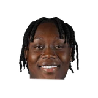

Killian Hayes on #Pistons' Sekou Doumbouya:
“I have a great relationship with Sekou. I've done multiple camps with him. It would be an easy adjustment if I went there because I know him. Playing with him ... it would be fun. He's one of my guys.”

8 quotes about Sekou Doumbouya from 4 players, coaches and executives, newest first. Each one links to its original source.
Killian Hayes on #Pistons' Sekou Doumbouya:
“I have a great relationship with Sekou. I've done multiple camps with him. It would be an easy adjustment if I went there because I know him. Playing with him ... it would be fun. He's one of my guys.”
#Pistons Ed Stefanski on Sekou Doumbouya:
“We finally got a guy with some size. We have a lot of 6-4 to 6-6 guys. We got a kid with big upside. We have to work with him to develop him but there’s a lot of things to like about this guy.”
Rod Beard:#Pistons Dwane Casey on Sekou Doumbouya's progress:
“Sekou is growing; I'm so happy and proud of him with seriousness of work.”
Rod Beard:#Pistons Dwane Casey on Sekou Doumbouya's progress:
“Sekou is growing; I'm so happy and proud of him with seriousness of work.”
Rod Beard:#Pistons Dwane Casey on Sekou Doumbouya's limited minutes:
“I wouldn't make a lot out of it right now -- he is behind two pretty good players in that situation.”
#PistonsDwane Casey on Sekou Doumbouya:
“I think he's playing as well as he has since he's been here -- on both ends of the floor.”
Rod Beard:#Pistons Dwane Casey on Doumbouya:
“We expect him to take the next step in his second year...he's in that next group of players we need to develop in time.”
Killian Hayes on #Pistons' Sekou Doumbouya:
“I have a great relationship with Sekou. I've done multiple camps with him. It would be an easy adjustment if I went there because I know him. Playing with him ... it would be fun. He's one of my guys.”
Rod Beard:#Pistons Dwane Casey on Sekou Doumbouya facing Kawhi, Draymond and LeBron in his first 3 games:
“What do they say in the Baptist Church when you get baptized? Hallelujah! Put him in the water and he's getting baptized with three of the top players in our league.”
Rod Beard:#Pistons Summer League coach Sean Sweeney on Sekou Doumbouya (right hamstring strain):
“I’m not sure what it was. It’s day-to-day; whatever those (medical) guys say, we do.”
#Pistons Ed Stefanski on Sekou Doumbouya:
“We finally got a guy with some size. We have a lot of 6-4 to 6-6 guys. We got a kid with big upside. We have to work with him to develop him but there’s a lot of things to like about this guy.”